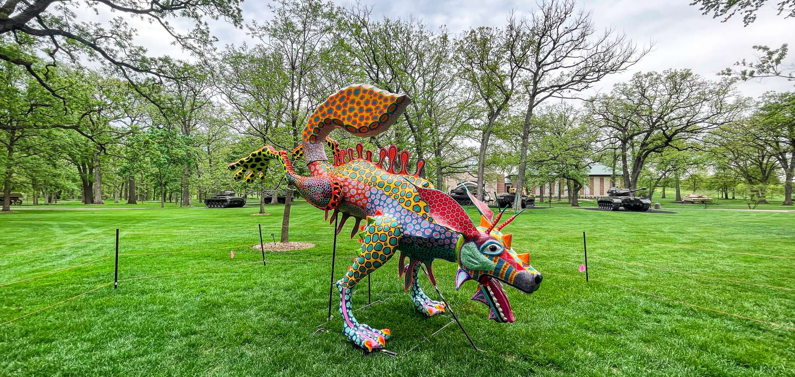

Sobre los alebrijes
¿Qué son los alebrijes?
Los alebrijes son criaturas mágicas que suelen estar hechas de cartón o papel maché. Sin embargo, hoy en día, muchos artesanos usan madera para tallar estas criaturas. Todos los alebrijes se elaboran con diferentes partes de animales; presentan rasgos exagerados y están pintados con colores vibrantes y patrones y diseños intrincados. Cada alebrije tiene características distintivas que los convierten en una obra de arte única. Por último, los alebrijes se utilizan a menudo en festivales y celebraciones.
Si has visto la película Coco de Disney, recordarás haberlos visto en el más allá. Sin embargo, en la película se dice que los alebrijes son "guías espirituales para el más allá", lo cual es inexacto.
Contrariamente a la creencia popular, los alebrijes fueron inventados en 1963 por un artesano mexicano de papel maché o cartonero llamado Pedro Linares.
Pedro era un hombre humilde que se ganaba la vida creando artesanías de papel maché, como piñatas y máscaras. Uno de sus productos más vendidos eran sus efigies de San Judas, utilizadas durante la Semana Santa para la tradición de la Quema de Judas.
¿Cuál es el significado de los alebrijes?
Alebrijes, las figuras fantásticas más coloridas del arte ...
Al ser parte del arte tradicional mexicano, se cree que regalar un alebrije ayuda a "espantar" a los malos espíritus de los hogares, especialmente aquellos alebrijes con un aspecto más "monstruoso". Asimismo, estos se consideran como un símbolo de buena suerte.
Conectar un significado
En muchas pequeñas partes de América Latina, este evento ocurre en la víspera de Año Nuevo como símbolo de deshacerse del mal y comenzar el año con pureza. Algunas comunidades celebran este ritual quemando efigies de Judas, de ahí el nombre de "Quema del Judas".
Aunque no sea directametne su origen, se le podría atribuir con el hecho de su creador de haberse librado de su enfermedad gracias a estas creaturas guiandolo a despertarse, y de una manera librandose del mal. Esta libertad de creencias y especulaciones son lo que cultiva riqueza en la cultura de nuestras vidas, y compartirlas mediante el arte es inspirador.